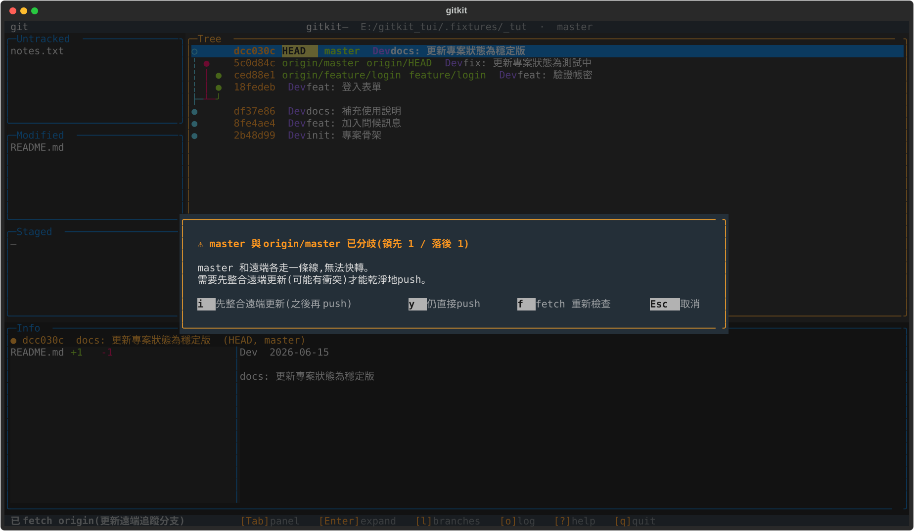
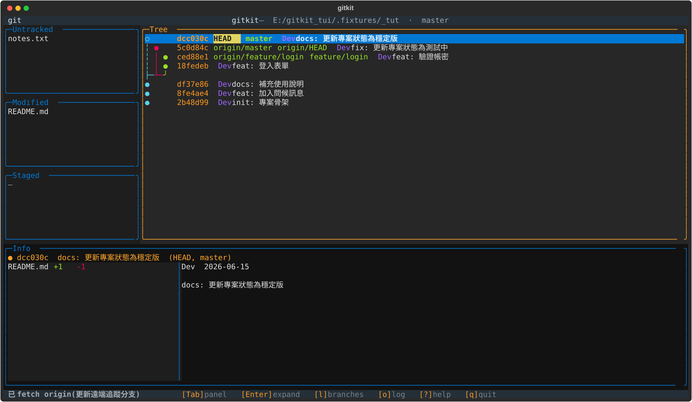
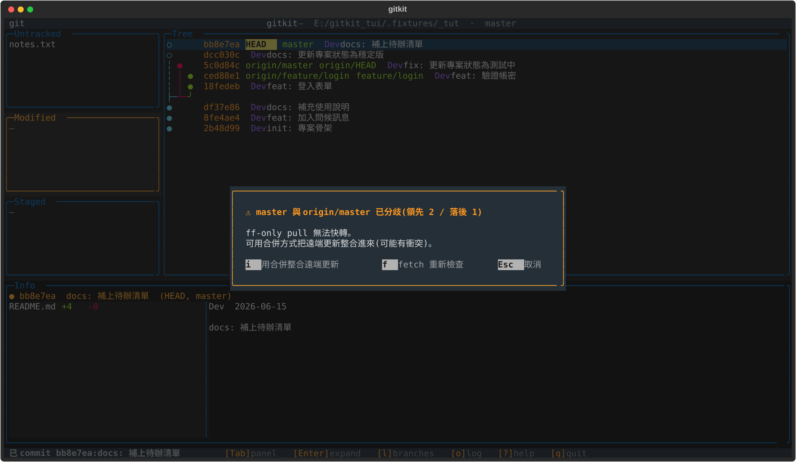
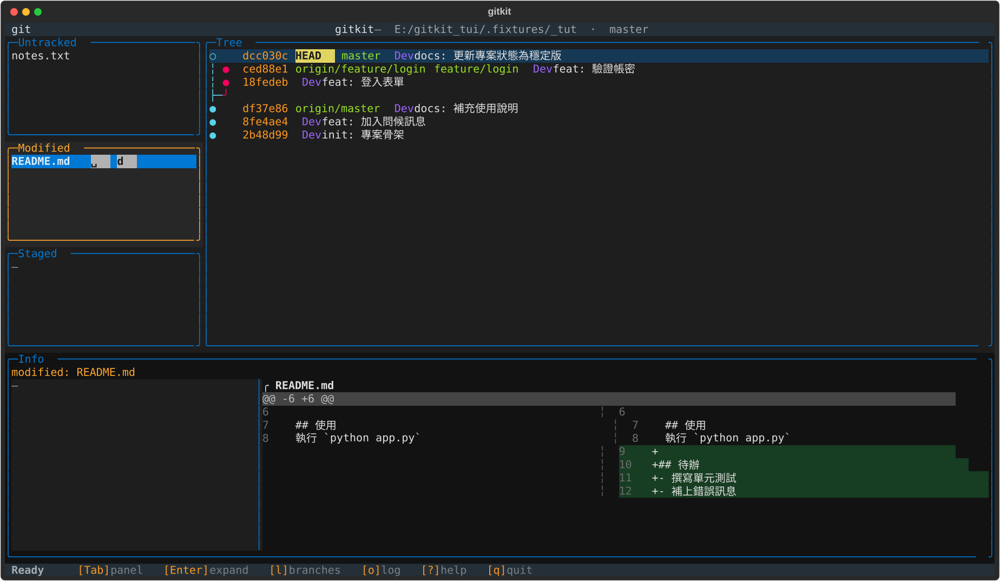
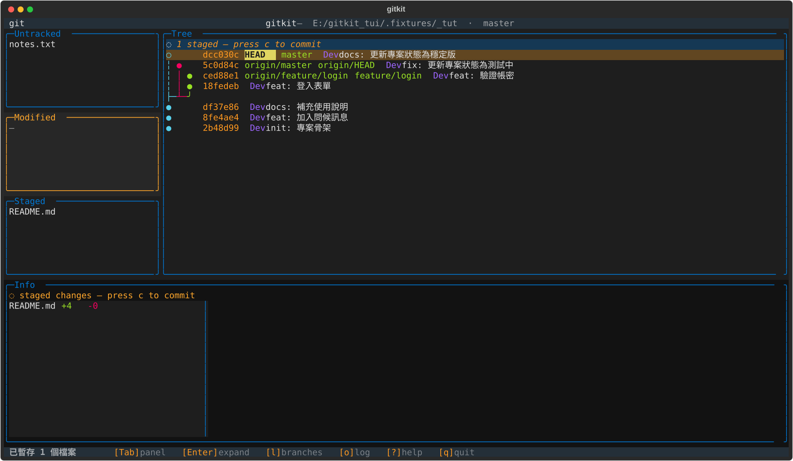
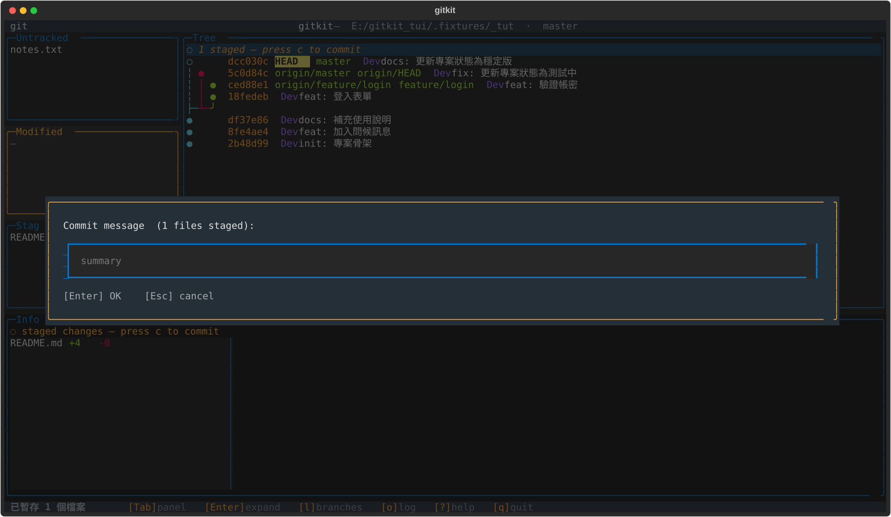
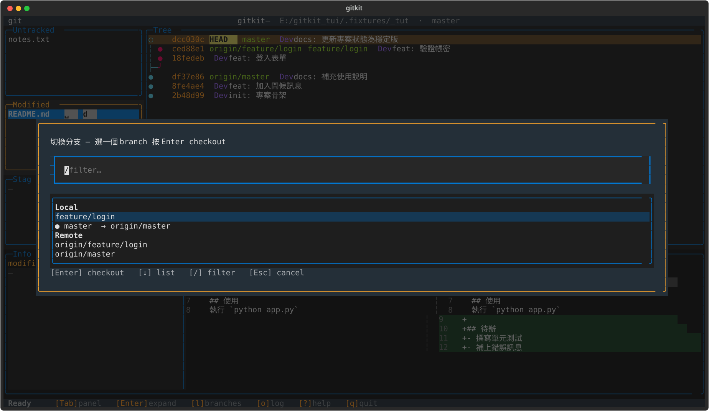
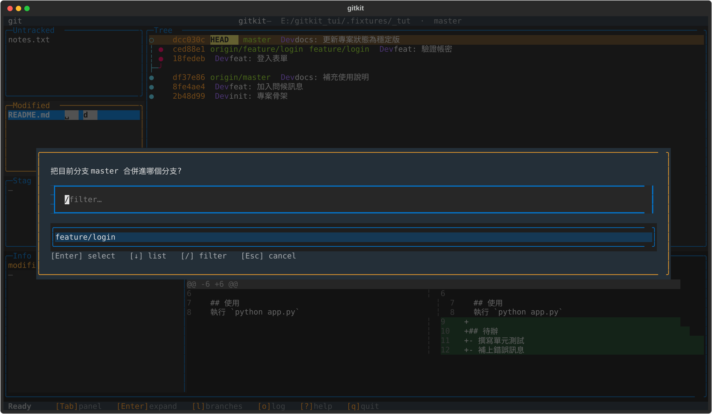
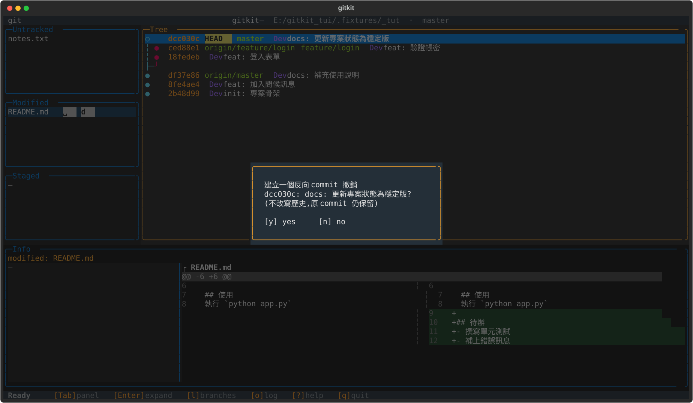
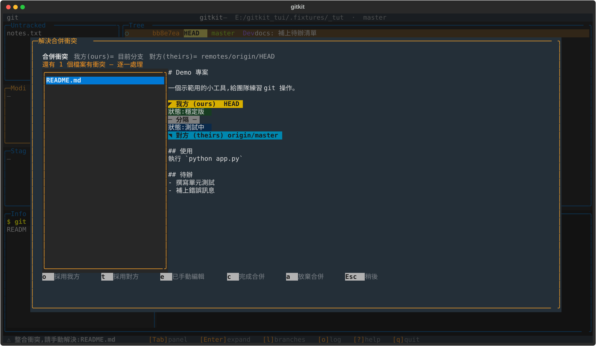

主畫面導覽 — 一眼看懂三個區塊
左邊三欄 = 檔案狀態(對應「工作區/暫存區」);中間 = 歷史線圖(本地庫); 下方 Info = 你選到的東西的細節。用 Tab 在區塊間移動。

一個跑在終端機裡的 git 視覺化小工具 — 把改了什麼、暫存了什麼、跟遠端差多少,全部畫在同一個畫面上。
我們用一個完整的範例走一遍日常: 看遠端 → 拉更新 → 改檔 → 暫存 → 提交 → 分支/合併 → 撤銷 → 推送 → 解衝突
開啟:python -m gitkit /你的/git/專案路徑
移動 ↑↓ / jk 切換面板 Tab 展開 Enter 說明 ? 離開 q
git 不是只有「存檔」。一份改動會依序經過四個地方,gitkit 的版面就是照這條線排的。
記住這條由左到右的線 — 後面每個操作,都只是把改動往右推一格,或從右邊拉回來。
主畫面導覽 — 一眼看懂三個區塊
左邊三欄 = 檔案狀態(對應「工作區/暫存區」);中間 = 歷史線圖(本地庫); 下方 Info = 你選到的東西的細節。用 Tab 在區塊間移動。
線圖怎麼看 — 每個符號都有意思
● 一個 commit(一筆歷史)。◆ 是合併點。
HEAD = 你現在站在哪一筆;master feature/login 是分支標籤。
實心 ● = 已經推上遠端;空心 ○ / 虛線 = 只在本地、還沒推。
origin/master 標籤 = 遠端目前停在哪 — 和你的 master 差幾格,一看就知道。
右邊每一列:
線圖 短編號 分支標籤 作者 訊息
後果提示:把游標停在某一列,下方 Info 會立刻顯示那筆 commit 改了哪些檔、訊息是什麼 — 不用切畫面。

① fetch(按 f)— 先看遠端有什麼新東西
fetch 只去問遠端「你那邊到哪了」,把資訊抓回來,完全不動你的檔案、也不改你的分支。 最安全、隨時可按。
後果:線圖上會多出 origin/master 的新節點
(圖中 測試中 那筆是別人推的)。你會看到「自己領先 1、落後 1」—
代表你和遠端各走了一條線。

② pull(按 p)— 把遠端更新拉下來併進來
pull = 取回 + 併入目前分支。若只是你落後,直接快轉更新; 若雙方各有新 commit(分歧),工具會停下來問你怎麼整合,而不是硬幹。
後果:分歧時跳出此提示 — 按 i 用合併整合(可能要解衝突)、f 重新檢查、Esc 先不動。 乾淨的情況則直接把遠端的 commit 接到你的線上。

③ 改了檔案 → 自動出現在 Modified
你在編輯器改了 README.md,回到 gitkit:Tab 切到 Modified,
用 ↑↓ 選檔(或滑鼠單擊)。
後果:下方 Info 立刻顯示這個檔改了哪幾行 (綠 +、紅 −),提交前先確認自己改了什麼。

④ 按 Space 暫存 → 檔案移到 Staged
暫存 = 告訴 git「這次提交要包含這個檔」。沒暫存的改動不會被提交 — 所以你可以一次只挑一部分。
後果:檔案從 Modified 跳到 Staged;線圖最上方多一列 ◌ N staged 提醒你「有東西等著提交」。再按一次 Space 可取消暫存。

⑤ 按 c 輸入訊息 → 正式提交
提交 = 把暫存區的內容,在本地庫記成一筆有訊息、可回溯的歷史。 訊息寫清楚「做了什麼」,以後找得回。
後果:HEAD 往前進一格、線圖多一個節點, 工作區回到乾淨。注意:這只記在本地,還沒上傳遠端。

⑥ 分支:按 l 看清單 / b 開新分支
分支 = 一條平行的開發線,可以放心試做新功能而不影響 master。 l 列出本地與遠端分支,Enter 切換過去;b 建立並切到新分支。
後果:切換分支後,左邊標題列的分支名、線圖的 HEAD 位置都會跟著變 — 你會清楚知道自己「現在站在哪條線上」。

⑦ merge(按 m)— 把目前分支併進另一條
做完 feature/login 想併回主線時用 merge。選一個目標分支,
工具會先幫你切過去再合併。
後果:能直接快轉就快轉;否則產生一個合併節點 ◆把兩條線接起來。 若兩邊改到同一行 → 進入衝突解決(見後面)。

⑧ revert(按 v)— 安全地撤銷一筆 commit
在線圖選一筆 commit 按 v。revert 不是刪掉歷史,而是再記一筆 「把它做的事反過來」的新 commit — 對已經分享出去的歷史最安全。
後果:原本那筆 commit 仍然保留在線圖上,只是多一個反向 commit 抵銷它的內容。隨時還能查到當初改了什麼。

⑨ push(按 P)— 把本地 commit 推上遠端
提交只在本地,push 才會讓團隊看到。若遠端已經有別人的新 commit, 工具會先攔下來,避免你推不上去或蓋掉別人。
後果:偵測到落後/分歧時跳此提示 — i 先整合遠端更新再推,是最穩的選擇;整合後線圖上的空心節點會變實心(已推送)。
⑩ 遇到衝突 → 在畫面裡逐檔解決
同一行被兩邊改到時(這裡 狀態:穩定版 vs 測試中)會自動跳出此畫面。
左邊選一個檔,右邊看雙方版本。
後果 / 怎麼選:o 採用我方 · t 採用對方 · e 我已手動編輯。每個檔都處理完,按 c 完成合併; 想反悔按 a 放棄、Esc 稍後再處理。

| 你做的事 | 按鍵 | 畫面上的後果 |
|---|---|---|
| 選 Modified 的檔 | ↑↓ / 單擊 | Info 顯示該檔改了哪幾行 |
| 暫存 / 取消暫存 | Space | 檔案在 Modified ↔ Staged 之間移動;線圖出現/移除「◌ staged」 |
| 丟棄改動 | d | 該檔工作區變更被還原(不可復原,會先問你) |
| 提交 | c | 線圖多一個節點,HEAD 前進,工作區變乾淨(仍在本地) |
| fetch / pull | f / p | fetch 只更新 origin 標籤;pull 還會把更新併進來 |
| push | P | 本地節點變成「已推送」(空心→實心);落後時先擋下 |
| 切換 / 合併 / 撤銷 | l · m · v | HEAD 換線 / 線圖出現合併點 / 多一筆反向 commit |
原則:有風險的動作(丟棄、合併、推送)都會先跳提示,看清楚再決定。
| 做什麼 | 按鍵 |
|---|---|
| 移動 / 切換面板 / 展開內容 | ↑↓ j k · Tab · Enter |
| 暫存 / 取消暫存 · 丟棄改動 | Space · d |
| 提交 | c |
| 分支清單 / 建立分支 / 合併 | l · b · m |
| 取回遠端 / 拉取 / 推送 | f · p · P |
| 撤銷 commit · 解決衝突 | v · x |
| 指令紀錄 · 重新整理 · 說明 · 離開 | o · r · ? · q |
心法:左到右把改動往遠端推 — 工作區 → Space 暫存 → c 提交 → P 推送; 不確定時先 f 看一下遠端、有疑慮就讓提示擋著你。